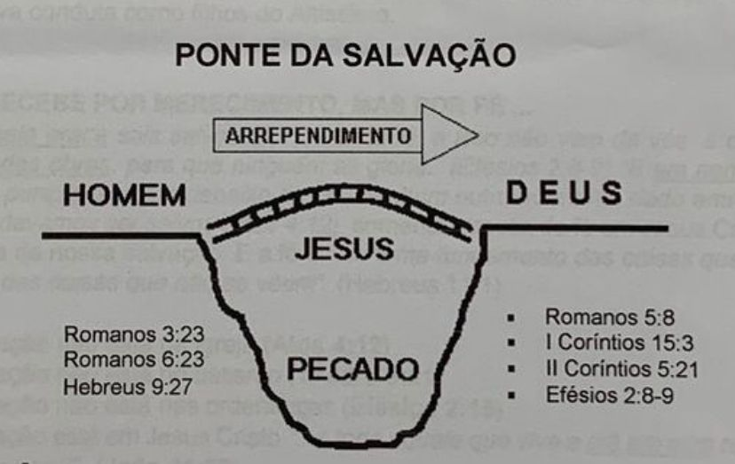

"Que o Deus de nosso Senhor Jesus Cristo, o Pai da glória, vos dê o espírito de sabedoria e de revelação no pleno conhecimento dele; sendo iluminado os olhos do vosso coração, para que saibais qual seja a esperança da sua vocação, e quais as riquezas da glória da sua herança nos santos." Ef 1:17-18
PORQUE ESTOU AQUI?
VOCÊ FOI ATRAÍDO PELO SEU CRIADOR...
Deus nos diz através do livro de Jeremias, capítulo 31, verso 3 (versão Revista e Corrigida da Bíblia), o seguinte com amor eterno te amei; também com amável benignidade Eu te atrai". (RC)
DEUS ESCOLHEU VOCÊ ATRAVES DO SEU FILHO, JESUS...
Na carta que Paulo escreve aos Efésios, no capítulo 4, verso 4 até o 6 diz que: "Antes da criação do mundo, Deus já nos havia escolhido para sermos dele por meio da nossa união com Cristo, a fim de pertencermos somente a Deus e nos apresentarmos diante dele sem culpa. Por causa do Seu amor por nós, Deus já havia resolvido que nos tornaria seus filhos, por meio de Jesus Cristo, pois este era o seu prazer e a sua vontade. Portanto, louvemos a Deus pela sua gloriosa graça, que ele nos deu gratuitamente por meio do seu querido Filho". (BLH)
ELE JAMAIS VAI TE ABANDONAR...
Na epístola de João, capítulo 6, verso 37 Jesus declara que "Tudo o que o Pai me dá vira a mim; e o que vem a mim de maneira nenhuma o lançarei fora" (RC). No verso 36 deste mesmo capítulo, Ele afirma que você jamais terá sede e fome espiritual, pois Ele mesmo,
Jesus, é o Pão (o alimento) da Vida.
1. MAS EU SEMPRE ESTIVE COM DEUS!
PODEMOS ATÉ PENSAR QUE ESTAMOS COM DEUS, MAS...
Na carta que Paulo escreveu aos Romanos no capítulo 3, verso 23 nos diz que "Todos pecaram e estão afastados da presença gloriosa de Deus". (BLH). No capítulo 5, verso 12 da mesma carta, encontramos os dizeres: "Pelo que, como por um homem entrou o pecado no mundo, e pelo pecado, a morte, assim também a morte passou a todos os homens, por isso que todos pecaram. (RC)
MAS EU NÃO COMETI GRANDES PECADOS!
No primero livro do apóstolo João, no capítulo 1, verso 8 diz: Se dissermos que não temos pecado, enganamo-nos a nós mesmos, e não há verdade em nós". (RC). Também encontramos escrito no capítulo 4, verso 17 da epístola de Tiago, o seguinte: "Aquele, pois, que sabe fazer o bem e o não faz comete pecado". (RC)
2. O QUE DEVO FAZER AGORA?
CONFESSAR E ACEITAR O SACRIFÍCIO DE CRISTO...
Deus já fez a parte dele para restaurar o nosso relacionamento com Ele. Agora ele espera que cada um de nós, individualmente, aceite o que Ele fez por nós. Reconhecendo e confessando os nossos pecados, para recebermos o perdão de graça. Podemos fazer isso através de uma simples oração, convidando a Jesus para ser o Nosso Senhor e Salvador.
- (João 1:9) "Se confessarmos os nossos pecados, ele é fiel e justo para nos perdoar os pecados e nos purificar de toda injustiça". (RC)
- (João 1:12)"Mas a todos quantos O receberam deu-lhes o poder de serem feitos filhos
de Deus: aos que crêem no seu nome". (RC)
- (Romanos 10:9)"Se, com a tua boca, confessares ao Senhor Jesus e, em teu coração, creres que Deus o ressuscitou dos mortos, serás salvo". (RC)
ARREPENDER-SE E RECEBER A SALVAÇÃO...
Todas as ações que praticamos passam primeiramente pelos pensamentos, eles são o combustível para nossas atitudes. Arrepender-se não é sentir remorso após uma situação desastrosa; não podemos confundi-los, pois o primeiro gera mudança de pensamentos, sentimentos, propósitos, mudanças em nossa vida etc, o remorso gera apenas tristeza e angustia.
- (Marcos 6:12)"Então saíram e pregaram que todos se arrependessem"
- (Lucas 3:8)"Produzi, pois, frutos dignos de arrependimento"
- (Lucas 5:32)Disse Jesus: "Eu não vim chamar justos, mas pecadores, ao arrependimento".
- (Lucas 13:3)Disse Jesus: " ...se não vos arrependerdes, todos de igual modo perecereis".
- (Lucas 15:10)"Assim, digo-vos, há alegria na presença dos anjos de Deus por um só pecador que se arrepende".
- (Atos 17:30)"Mas Deus, não levando em conta os tempos da ignorância, manda agora que todos os homens em todo lugar se arrependam;".

3. NO QUE CONSISTE A SALVAÇÃO?
É A MUDANÇA DE DOMÍNIO...
Deus nos liberta do império das trevas e nos transporta para o reino do seu Filho (Colossenses 1:13). Neste novo reino, nós devemos viver de acordo com a vontade de Deus, que nos salvou. Paulo nos relata na segunda carta aos Coríntios, capítulo 5, verso 15 "E Ele morreu por todos, para que os que vivem não vivam mais para si mesmos, mas para aquele que por eles morreu e ressuscitou". Jesus nos comprou com seu sacrifício e passa a ser o nosso Salvador e Senhor.
É O PRÊMIO POR ACEITAR A JESUS...
Todo aquele que recebeu a Jesus como Senhor e Salvador, deve estar convencido através da fé, que possui a salvação, e esta é eterna pela vontade de Deus.
...Eu lhes dou a vida
eterna, e por isso nunca morrerão. Ninguém poderá arrancar uma ovelha da minha mão".
(João 10:28)(BLH), em outro texto encontramos: "Não te deixarei, nem te desampararei.
(Hebreus 13:5b)(RC)
É O QUE NOS TORNA FILHOS DE DEUS....
Pela fé em Jesus Cristo, todos somos feitos filhos de Deus (Gálatas 3:26), estando perdoados todos os nossos pecados [...] todos os que NEle crêem receberão o perdão dos pecados pelo seu nome". (Atos 10:43). A partir deste momento, começamos uma nova vida, como filhos de Deus e co-herdeiros em Cristo, sem acusação, sem o peso do pecado, porque como Paulo escreveu aos seus irmãos em (2Cor 5:17) "Se alguem está em Cristo, nova criatura é; as coisas velhas já passaram; eis que tudo se fez novo", assim deve ser nossa nova conduta como filhos do Altissimo.
NÃO SE RECEBE POR MERECIMENTO, MAS POR FE...
"Porque pela graça sois salvos, por meio da fé; e isso não vem de vós; é dom de Deus.
Não vem das obras, para que ninguém se glorie." (Efésios 2:8-9) "E em nenhum outro há salvação, porque também debaixo do céu nenhum outro nome há, dado entre os homens, pelo qual devamos ser salvos (Atos 4:12), somente através da fé em Jesus Cristo podemos ter certeza da nossa salvação. E a fé é "...o firme fundamento das coisas que se esperam, e a prova das coisas que não se vêem". (Hebreus 11:1)
- A salvação não está na Igreja (Atos 4:12)
- A salvação não está no batismo (1Pedro 3:21)
- A salvação não está nas ordenanças (Efésios 2:15)
- A salvação está em Jesus Cristo"...e todo aquele que vive e crê em mim nunca morrerá. Crês tu isso?"(João 11:26)
DEVEMOS PERSEVERAR, COM TEMOR E OBEDIÊNCIA...
Quando se diz, perseverar significa dizer que devemos continuar firmados e crendo em Cristo; e tudo aquilo que nos foi ensinado a seu respeito, de conformidade com que está escrito Bíblia. Sobre essa questão, o próprio Jesus, assim se manifestou: "Aquele, porém, que perseverar até o fim, esse será salvo" (Mateus 24:13). Portanto, a salvação não é uma coisa que se adquire com certificado de posse definitiva, mas, o que garante essa posse, é o compromisso com a perseverança; porque, naquele dia, muitos dirão: "Senhor.
Porventura não temos nós em teu nome profetizado, e em teu nome não fizemos milagres?
E Jesus, lhes responderá: "Apartai-vos de mim, os que praticam a iniquidade" (Mt 7:22 e
23) (RC)
"...meus amados, do modo como sempre obedecestes, não na minha presença somente, mas muito mais agora na minha ausência, efetuai a vossa salvação com temor e tremor". (Filipenses 2:12)
4. MAS QUEM E JESUS?
JESUS É DEUS...
O apóstolo João afirma, no capítulo 1 dos versos 1 a 14 que Jesus é Deus, através das considerações a seu respeito, dizendo que (v3) todas as coisas foram feitas por Ele, que (v9) Ele é a luz que ilumina as trevas do coração, que o mundo (v10) veio a existir por seu intermedio etc. Também Paulo escreveu aos Colossenses, capítulo 1 verso 17 parte b, ...tudo foi criado por ele e para ele" (RC)
ELE É O CAMINHO, A VERDADE E A VIDA...
Assim disse o Próprio Jesus no evangelho narrado pelo apóstolo João, no capítulo 14, verso
6: "Eu sou o caminho, e a verdade, e a vida, e ninguém vem ao Pai senão por mim". (RC)
CAMINHO: Porque ninguém pode se achegar ao Criador, através de outra forma que não seja através do Filho de Deus. Não há mediador entre os homens e Deus, senão Jesus Cristo, como nos relata Paulo, escrevendo a primeira carta à seu amigo Timóteo, capítulo 2, verso 5: "porque há um só Deus e um só mediador entre Deus e os homens, Jesus Cristo[...J"
VERDADE: Porque através Dele e por Seu intermédio, todas as coisas são formadas, desde a criação do mundo, conforme está registrado na epistola de Paulo aos Colossenses, capítulo 1, versículos 16 a 17: "porque nele foram criadas todas as coisas que há nos céus e na terra, visíveis e invisíveis, sejam tronos, sejam dominações, sejam principados, sejam potestades; tudo foi criado por ele e para ele". (RC)
VIDA: Jesus nos salvou da morte..."Porque Deus amou o mundo de tal maneira que deu o seu Filho unigênito (Jesus), para que todo aquele que nele crê não morra, mas tenha a vida eterna." (João 3:16) (RC)
ELE É A PORTA / A PONTE...
Não há como chegar a Deus sem passar pela porta estreita, como está escrito no evangelho de Lucas capítulo 13, versículo 24 "Façam tudo para entrarem pela porta estreita". O próprio Senhor Jesus Cristo disse "Eu sou a porta; se alguém entrar por mim, salvar-se-á, e entrará, e sairá, e achará alimento". (João 10:9).
5. PORQUE DEVO CRER NAS ESCRITURAS ?
ELAS TESTIFICAM A EXISTÊNCIA DE DEUS...
Na epístola de João, capítulo 5, versículo 39 da Bíblia na Linguagem de Hoje (BLH) Jesus disse aos Judeus:
"Vocês estudam as Escrituras Sagradas porque pensam que vão
encontrar nelas a vida eterna. E são elas mesmas que dão testemunho a meu favor". A bíblia (que significa livros), foi escrita por 40 homens diferentes, em tempos diferentes.
Nenhum sabia que seus escritos fariam parte da Bíblia e mesmo assim não há nenhuma contradição entre seus ensinos. Suas narrativas tratam do passado, do presente e do futuro. A arqueologia prova que a Bíblia e os seus relatos são verdadeiros.
- É a palavra de Deus (Dt 28:1-2; Ts 2:13)
- É a revelação da vontade de Deus (SI 19:1-6;
Rm 2:15)
- Foi inspirada por Deus (2Tm 3:16; 2Pe 1:20-21)
- Autentica a divindade de Jesus Cristo (Jo 20:31)
- Fornece luz para o seu caminho (SI 119:105 e 130)
- É alimento para a alma (Jó 23:12; SI 119:103;
1Pe 2:2)
- É uma arma de defesa (Ef 6:17)
- Tem poder salvador (Rm 1:16)
- Foi escrita para nos dar esperança (Rm 15:4)
- Nos dar conhecimento sobre a vida eterna
(1Jo 5:13)
- Nos trazer advertências, através dos relatos de experiências (1Co 10:11)
6. COMO USAR A BÍBLIA?
MEDITANDO DE DIA E DE NOITE...
A bíblia não deve ser utilizada como uma "caixa de promessas" ou como um "amuleto espiritual". Devemos meditar nas escrituras, lendo com atenção observando o contexto de cada versículo, fazendo sempre uma indagação pessoal sobre a mensagem que Deus está enviando para sua vida. Procure ler diariamente a Palavra de Deus, utilizando os mecanismos da leitura eficaz, tais como: Sublinhar as palavras-chaves, anotar suas duvidas e sobretudo, sempre , pesquisar as palavras desconhecidas, facilitando sua análise textual.
- Sempre que possível, ouça a Palavra de Deus
(Lc 8:15)
- Leia a Palavra de Deus (Dt 17:19)
- Estude a Palavra de Deus (2Tm 2:15)
- Memorize a Palavra de Deus (SI 119:11)
- Medite na Palavra de Deus (SI 1:1-3)
- Pratique a Palavra de Deus (Mt 7:24-27; Tg 1:22)
- Comunique a outros a Palavra de Deus (2Tm 2:2)
7. COMO ENTENDER AS VERDADES BÍBLICAS?
ATRAVÉS DA ORAÇÃO...
Só podemos saber a vontade ou a opinião de outra pessoa através da comunicação. Nossa comunicação com Deus se dá através da oração. Orar é falar com nosso Senhor, é ter intimidade com Cristo, é apresentar a Ele nossas necessidades e ao mesmo tempo agradecêlo pela salvação e pela vida eterna que Ele nos agraciou. O propósito de Deus para nossas vidas está escrito em sua Palavra, para realizarmos sua vontade, precisamos conhece-las.
- E através da oração que conhecemos a vontade específica de Deus para nós.
- Paulo nos recomenda: "Não andeis ansiosos por coisa alguma, mas apresentai as vossas petições diante de Deus, pela oração e pela suplica, com ações de graças" (FI 4:6).
- Devemos sempre orar em Nome de Jesus (Jo 16:23-24; 1Tm 2:5; At 4:12)
- Devemos orar com Fé (Hb 11:6)
ATRAVÉS DO AUXÍLIO DO ESPÍRITO SANTO...
Nossa capacidade de discernir ou interpretar as verdades Bíblicas, são muito limitadas, devemos então solicitar o auxílio do "consolador", o Espírito Santo de Deus, conforme está escrito em (João 14:26) "Mas o Ajudador, o Espírito Santo a quem o Pai enviará em meu nome, esse vos ensinará todas as coisas, e vos fará lembrar de tudo quanto eu vos tenho dito".
Também Lucas no evangelho, capítulo 12, verso 12 narra: "Porque o Espírito Santo vos ensinará na mesma hora o que deveis dizer". Paulo diz que ensinava a palavra de Deus através do Espírito Santo. (1Cor 2:13).
- "Do mesmo modo também o Espírito nos ajuda na fraqueza; porque não sabemos pedir (orar) como convém, mas o Espírito mesmo intercede por nós com gemidos inexprimíveis". (Romanos 8:26)
8. COMO DEVO ORAR ?
COMO JESUS NOS ENSINOU....
A oração deve ser pessoal, praticada e refletida. A oração que Jesus ensinou aos seus discípulos deve ser um modelo estrutural, e não uma "reza" ou uma vã repetição, como esta escrito em (Mateus 6:7) "E, orando, não useis de vãs repetições como os gentios; porque pensam que pelo seu muito repetir serão ouvidos". (BLH)
| Verso |
Texto bíblico |
Interpretação |
| V9a |
Pai nosso que estás nos céus, santificado seja o teu nome. |
Adorando a Deus e exaltando seu santo Nome. |
| V10 |
Venha o teu reino |
Aliança com Deus, a espera da eternidade, e seus valores em mim. |
| V10b |
Seja feita a Sua vontade na terra como nos céus |
Submissão à vontade de Deus em todos os lugares. |
| V11 |
Dá-nos o pão nosso de cada dia |
Pedindo a provisão com humildade. |
| V12 |
Perdoai os nossos pecados como nós temos perdoado os nossos devedores |
Confissão e pedido de perdão e concessão de perdão para os nossos devedores e ofensores. |
| V13 |
Não nos deixe cair em tentação, mas livra-nos do mal. |
Confiança, Vigilância e libertação. |
| V13b |
Porque teu é o reino, o poder, e a glória para todo o sempre. |
Reconhecimento do poder e da glória eterna de Deus. |
| V13c |
Amém |
Assim seja. Fé incondicional. |
- Não devemos orar para os Homens (Lc 8:15)
- Devemos ter um período diário de oração a sós (Mt 6:6)
- Não devemos usar frases repetitivas como rezas (Mt 6:7)
DEVEMOS ORAR PARA...
Para enfrentarmos as agruras deste mundo, e mantermos nossa comunhão com nosso Pai Celestial.
- VIGIAR - Disse Jesus: "Vigiai e orai, para que não entreis em tentação. Na verdade o espírito está pronto, mas a carne é fraca" (Mt 26:41). O apostolo Paulo nos recomenda vigiarmos sempre: "Orai sem cessar" (1Ts 5:17).
- DAR GRAÇAS - Por tudo que o Senhor nos tem concedido "A ti, ó Deus de meus pais, eu te rendo graças e te louvo, porque me deste sabedoria e poder "Em tudo dai graças, porque esta é a vontade de Deus em Cristo Jesus para convosco" (Dn 2:23; 1Ts 5:18).
- RECEBERMOS -"E tudo quanto pedirdes em oração, crendo, recebereis" (Mt 21:22);
- ALCANÇARMOS GRAÇA - "/saque orou ao Senhor por sua mulher, que era estéril; e o Senhor lhe ouviu as orações, e Rebeca concedeu" (Gn 25:4);
- CURA- "Aconteceu achar-se enfermo de disenteria, ardendo em febre, o pai de Públio, Paulo foi visitá-lo e, orando, impôs-lhe as mãos e o curou" (At 28:8);
- LIBERTAÇÃO - "Por volta de meia-noite, Paulo e Silas oravam e cantavam louvores a Deus, e os demais companheiros de prisão escutavam. De repente sobreveio tamanho terremoto, que sacudiu os alicerces da prisão; abriram-se todas as portas; soltaram-se as cadeias de todos". (At 16:25 e 26);
- TERMOS DISCERNIMENTO- "Para que Deus do Senhor Jesus Cristo, o Pai da glória, vos conceda espírito de sabedoria e de revelação do pleno conhecimento dele" (Ef 1:17)
- MUDAR O DESTINO -"... quando me buscardes de todo vosso coração. Serei achado de vós, diz o Senhor, e farei mudar a vossa sorte..." (Jr 29:13 e 14);
- EXPULSAR - "... esta casta não pode sair senão por meio de oração e jejum" (Mc 9:29)
9. O QUE É JEJUM?
É UM PROCESSO DE ABSTENÇÃO DE ALIMENTOS...
Se abster de alimentação sólida ou líquida (com exceção da água - vital) ou mesmo restringir sua dieta por um período de tempo ou por dias (Mt 4:2; At 9:9; Dt 9:9; 1 Reis 19:8; Dn 10:3).
TEM COMO PROPÓSITO...
A santificação individual, como exercício espiritual de domínio sobre a própria carne, com propósitos bem definidos e não como uma dieta estética.
- O jejum é um exercício espiritual; nos prepara, quebra o orgulho e enfraquece os
instintos humanos. (Salmo 69:10; 35:13);
- Para fazer com que Deus mude a direção das coisas. No livro de Jonas, a cidade prevaleceu pelo jejum e oração. (Jonas 3:4-10);
- Para soltar os cativos e derrotar a Satanás. O jejum nos fortalece para "em nome de
Jesus" enfrentarmos os principados e potestades. (Isaías 58:6; 49:24-25);
- Para receber revelação específica de Deus para nossas vidas (Daniel 9:2-3; 21-22);
- Para subjugar o corpo O jejum nos ajuda a disciplinar o corpo. Os apetites do corpo são lícitos mas temos que tê-los sob controle; o físico submisso ao espiritual. (I Cor 9:27; Êx 16:3; Nm 11:4-5);
10. QUEM É O ESPÍRITO SANTO ?
É A TERCEIRA PESSOA DA TRI-UNIDADE DE DEUS
Um único Deus, em três pessoas inseparáveis, Pai, Filho e Espírito Santo. Este é um assunto importantíssimo para a nossa vida com Deus. Satanás tem procurado de todas as maneiras trazer confusão sobre isto, mas cada vez mais o Espírito Santo tem sido experimentado pelos filhos de Deus. Para desfrutarmos plenamente da nova vida que Deus nos dá, precisamos ter a convicção de que O Espírito de Deus habita em nós e também entender as consequências dessa habitação.
É REPRESENTADO DE FORMAS DIFERENTES...
Muitas vezes o Espírito Santo aparece na bíblia representado por um símbolo, Por exemplo: Fogo (Lc 3:16), Vento (At 2:2), Água, rio, chuva (Jo 7:37-39), Óleo (Zc 4:2-6), Selo (Ef 1:13), Pomba (Mt 3:16). Não quer dizer que o Espírito Santo seja algum desses símbolos.Ele é DEUS
- Ele é Eterno. (Hb 9:14)
- Ele é Onipresente. (SI 139:7-10)
- Ele é Onisciente. (I Co 2:10)
- Ele é Onipotente. (Lc 1:35)
TEM SUA PERSONALIDADE E ATRIBUTOS...
Jesus quando fala sobre o Espírito Santo o apresenta como uma pessoa: (Jo 14:15) "Eu rogarei ao Pai e Ele vos dará outro Consolador a fim de que esteja convosco para sempre".
A palavra usada para consolador aqui vem do grego parakletos (alguém que fica ao lado, junto, outro semelhante). Esta palavra traz o sentido de aconselhador, exortador, intercessor, estimulador, consolador, fortalecedor.
- Ele ama (Rm 15:30);
- Fala (Ap 2:7);
- Ensina (I Co 2:13);
- Ordena (At 16:6-7);
- Se entristece (Ef 4:30);
- Tem vontade própria (I Co 12:11);
- Intercede por nós (Rm 8:26-27);
- Temos comunhão com Ele (IICo13:13);
É RECEBIDO POR TODOS QUE CRÊEM EM JESUS CRISTO...
Precisamos entender que o Espírito Santo já foi dado a todos que creram (Jo 14:23-26) e que, portanto não é necessário buscar nem esperar aquilo que o Senhor já deu, Ele habita dentro de nós (Rm 8:9). Mas por outro lado quando nos convertemos devemos tomar posse da promessa de tal maneira que ela seja evidente, palpável e consciente, não como algo estático e indiferente. Há um momento em nossa caminhada com Cristo, que sentimos a presença do Espírito Santo de forma mais poderosa, nos enchendo de virtudes e capacidades específicas para atuar no Corpo de Cristo: A igreja. Esta manifestação divina ocorre mediante a vontade soberana de Deus, não por merecimento ou como recompensa, visto que é um dom de Deus, e dom e gratuito. "....recebereis o dom do Espírito Santo." (At 2:38)
11. O QUE É IGREJA?
É UMA EXPRESSÃO DO REINO DE DEUS EM NÓS...
A Igreja surgiu a partir do ministério de Jesus Cristo, Filho de Deus. Durante todo o tempo em que esteve na Terra, Jesus pregou o Reino de Deus (Mt 4:17, Lc 16:16, Lc 17:21). A Igreja é o Produto do reino de Deus na vida das pessoas. A Igreja primitiva cria, pregava e praticava literalmente todo o Conselho e Palavra de Deus. Eles permaneciam na doutrina dos apóstolos, no partir do pão, na comunhão e nas orações; e Deus testemunhava através deles com poder. Todos aqueles que são salvos e redimidos pelo seu sangue, são o corpo "a Igreja" de Jesus Cristo.
- Os propósitos de Deus sempre foram com a Igreja (Ef 1:4; 1 Pe 1:20; Ap 13:8; 17:8);
- A restauração da Igreja passa pela Unidade dos membros (Jo 17.18-23);
- A Igreja é universal, espiritual e invisível (Mt 16:18; Hb 12:22-23; At 9:31);
- Deus não habita em templos; por mais belos que sejam (At 17:24);
- Nos somos templo do Espírito Santo, Deus habita em nós (I Co 3:16);
- A Igreja não é o único lugar para adorar a Deus (Jo 4:24);
- A Igreja é o Corpo de Cristo, do qual Ele próprio é o Cabeça (Rm 12:4-5; 1Co12:12-23);
- A Igreja é a responsável pela gerência e distribuição das ofertas (At 2:44; At4:32-37).
12. PORQUE DEVEMOS CONTRIBUIR?
POR OBEDIÊNCIA A PALAVRA DE DEUS...
O Dízimo é um ato regular através do qual o crente fiel põe à parte dez pôr cento de suas rendas, e oferece ao Senhor como reconhecimento pelas bençãos recebidas. Dar o dízimo não é uma atitude que se toma como uma imposição. Entretanto quando deixamos de observar essa prática biblica, estamos roubando a Deus: "Roubará o homem a Deus ? Todavia, vós me roubais, e dizeis: em que te roubamos? Nos dízimos e nas ofertas alçadas" (MI 3:8). Vale a pena ser fiel no dizimo, porque não somente estaremos cumprindo a palavra de Deus, como sendo abençoados, tanto material como espiritualmente (MI 3:10).
PARA MANUTENÇÃO DO TEMPLO FÍSICO...
A participação financeira é considerada como elevado privilégio da nova vida em Cristo. Os dizimos (dez por cento da colheita) no antigo testamento eram ofertas ao Senhor e serviam para manter os levitas. Na nova aliança, é utilizada para o sustento daqueles que utilizam seu tempo para a administração da Igreja (templo) e para o socorro aos necessitados. No texto de Il Coríntios 8:1-5, Paulo usa 6 vezes a palavra graça em relação ao ato de contribuir. Graça e favor não merecido, mas livremente outorgado, pela vontade, zelo e bondade. Paulo ensina que a contribuição é um favor que Deus nos faz e não um favor que nós lhe fazemos. Enquanto o crente não entender e não sentir que a contribuição é uma graça divina, ele não terá completado sua vida cristã.
- Princípio espiritual inquestionável: troca de benefícios
(1 Cor 9:1-2, 10, 11, 13);
- Princípio natural quem planta colhe. (I Cor 9:3 e 10);
- Uma ordem do Senhor Jesus. (I Cor 9:14);
- Honra, gratidão, reconhecimento e dever.
(Gl 6:6; Rm 15:27, Pv 3:9);
- Salário, pagamento. (1Tm 5:17-18; Mt 10:10; Lc 10:7)
13. O QUE É A CEIA DO SENHOR
É UM MEMORIAL DA MORTE E RESSURREIÇÃO DE CRISTO...
Para esclarecimento da nossa relação prática no Corpo, não aceitamos a transubstanciação (transformam literal do pão no corpo e do vinho no sangue de Cristo), nem a consubstanciação (presença de Jesus nos elementos), defendida por Martinho Lutero. Estas práticas doutrinárias valorizaram uma ação física em detrimento de um ato espiritual, desfocando os princípios bíblicos. A igreja de Jesus Cristo crê, que a ceia é um memorial simbólico (1Cor 11:23), tão relevante quanto o batismo, porém assim como este, uma ação visível que representa um ato Espiritual.
- "Enquanto comiam, Jesus tomou o pão e, abençoando-o, o partiu e o deu aos discipulos, dizendo: Tomai, comei; isto é o meu corpo. E tomando um cálice, rendeu graças e deulhes, dizendo: Bebei dele todos; pois isto é o meu sangue, o sangue da nova aliança, o qual é derramado por muitos para remissão dos pecados". (Mt 26:24-26)
- É um ato de comunhão do Corpo e do Sangue de Cristo. "Ora, o cálice da bênção que abençoamos não é a comunhão do sangue de Cristo? O pão que partimos não é a comunhão do corpo de Cristo?" (1Cor 10:16)
- É um momento de reflexão, confissão e arrependimento "Por isso, aquele que comer o pão ou beber o cálice do Senhor, indignamente, será réu do corpo e do sangue do Senhor. Examine-se, pois, o homem a si mesmo, e, assim, coma do pão, e beba do calice; pois quem come e bebe sem discernir o corpo, come e bebe juízo para si". (1 Cor 11:27)
- É um momento de alegria e celebração da vitória de Cristo, e deve ser celebrado por todos que pertencem ao Corpo de Cristo, a saber, os que receberam e confessam a Jesus como Senhor e Salvador de suas vidas. "Comer com alegria. E, perseverando unânimes todos os dias no templo, e partindo o pão em casa, comiam com alegria e singeleza de coração. (Atos 2:46)
- Este memorial produz vida para o Corpo. "Disse-lhes Jesus: Em verdade, em verdade vos digo: Se não comerdes a carne do Filho do homem, e não beberdes o seu sangue, não tereis vida em vós mesmos". (João 6:53)
14. O QUE É O BATISMO ?
É UM SINAL VISÍVEL DE UMA REALIDADE ESPIRITUAL...
O batismo é um ato pelo qual mediante a fé nos unimos a Cristo para sepultar em sua morte a nossa velha natureza e começar pelo poder de sua ressurreição uma nova vida. Quando uma pessoa desce às águas do batismo, espiritualmente ela está se unindo a Cristo. A firmeza e edificação de um discípulo dependem diretamente da revelação que ele tem de sua união com Cristo.
É UMA ORDENANÇA DE ARREPENDIMENTO E FÉ EM JESUS CRISTO...
Depois de sua morte e ressurreição, antes de ser recebido nos céus, Jesus deu uma ordem a seus discípulos : "Portanto ide, fazei discípulos de todas as nações, batizando-os em nome do Pai, e do Filho, e do Espírito Santo; ensinando-os a observar todas as coisas que eu vos tenho mandado; e eis que eu estou convosco todos os dias, até a consumação dos séculos." (Mt 28:19-20)
- "Pedro então lhes respondeu: Arrependei-vos, e cada um de vós seja batizado em nome de Jesus Cristo, para remissão de vossos pecados; e recebereis o dom do Espírito Santo." (At 2:38)
- "Quem crer e for batizado será salvo; quem, porém, não crer será condenado". (Mc 16:16)
DEVE SER MINISTRADO POR UM LÍDER ESPIRITUAL E SEM DELONGAS...
Segundo os textos bíblicos, não encontramos conteúdo de ensino e preparação que devem preceder ao Batismo nas águas, apenas um princípio de direção e liderança espiritual.
- Quanto aos samaritanos "Mas, quando creram em Filipe, que lhes pregava acerca do reino de Deus e do nome de Jesus, batizavam-se homens e mulheres." (At 8:12)
- O etíope eunuco "E indo eles caminhando, chegaram a um lugar onde havia água, e disse o eunuco: Eis aqui água; que impede que eu seja batizado? [E disse Felipe: é lícito, se crês de todo o coração. E, respondendo ele, disse: Creio que Jesus Cristo é o Filho de Deus.] mandou parar o carro, e desceram ambos à água, tanto Filipe como o eunuco, e Filipe o batizou." (At 8:36-38)
- O apóstolo Paulo "Partiu Ananias e entrou na casa e, impondo-lhe as mãos, disse: Irmão Saulo, o Senhor Jesus, que te apareceu no caminho por onde vinhas, enviou-me para que tornes a ver e sejas cheio do Espírito Santo. Logo lhe caíram dos olhos como que umas escamas, e recuperou a vista: então, levantando-se, foi batizado." (At 9:17-18)
- Cornélio e sua Família "Enquanto Pedro ainda dizia estas coisas, desceu o Espírito Santo sobre todos os que ouviam a palavra. Os crentes que eram de circuncisão, todos quantos tinham vindo com Pedro, maravilharam-se de que também sobre os gentios se derramasse o dom do Espírito Santo; porque os ouviam falar línguas e magnificar a Deus. Respondeu então Pedro: Pode alguém porventura recusar a água para que não sejam batizados estes que também, como nós, receberam o Espírito Santo? Mandou, pois, que fossem batizados em nome de Jesus Cristo. Então lhe rogaram que ficasse com eles por alguns dias." (At 10:44-48)
- Lídia e sua família "No sábado saímos portas afora para a beira do rio, onde julgávamos haver um lugar de oração e, sentados, falávamos às mulheres ali reunidas. E certa mulher chamada Lídia, vendedora de púrpura, da cidade de Tiatira, e que temia a Deus, nos escutava e o Senhor lhe abriu o coração para atender às coisas que Paulo dizia. Depois que foi batizada, ela e a sua casa, rogou-nos, dizendo: Se haveis julgado que eu sou fiel ao Senhor, entrai em minha casa, e ficai ali. E nos constrangeu a isso". (At 16:13-15)
- O carcereiro e sua família"... e, tirando-os para fora, disse: Senhores, que me é necessário fazer para me salvar? Responderam eles: Crê no Senhor Jesus e seras salvo, tu e tua casa. Então lhe pregaram a palavra de Deus, e a todos os que estavam em sua casa. Tomando-os ele consigo naquela mesma hora da noite, lavou-lhes as feridas; e logo foi batizado, ele e todos os seus. Então os fez subir para sua casa, pôs-lhes a mesa e alegrou-se muito com toda a sua casa, por ter crido em Deus. Quando amanheceu, os magistrados mandaram quadrilheiros a dizer: Soltai aqueles homens." (At 16:30-35)
- Os doze efésios "Mas Paulo respondeu: João administrou o batismo do arrependimento, dizendo ao povo que cresse naquele que após ele havia de vir, isto é, em Jesus. Quando ouviram isso, foram batizados em nome do Senhor Jesus." (At 19:4-5)
15. O QUE DEVO FAZER DEPOIS DO BATISMO ?
ME TORNAR UM DISCÍPULO DE CRISTO...
Utilizando o texto de Mateus 28:19, concluímos que após o batismo o cristão deve buscar sua santificação, através dos ensinamentos da Palavra de Deus para nos tornarmos discípulos fieis "Portanto ide, fazei discípulos de todas as nações, batizando-os em nome do Pai, e do Filho, e do Espírito Santo; ensinando-os a observar todas as coisas que eu vos tenho mandado; e eis que eu estou convosco todos os dias, até a consumação dos séculos." (Mt 28:19-20)
- Ser salvo é tornar-se um discípulo, não se conformando com a velha forma deste mundo, mas transformando suas ações e atitudes, através dos pensamentos, com a ajuda do Espírito Santo (Rm 12:2). "Então vereis outra vez a diferença entre o justo e o ímpio; entre o que serve a Deus, e o que o não serve. "(Ml 3:18)
- O Discípulo é o seguidor, praticante dos ensinos do seu mestre. "Partindo Jesus dali, viu sentado na coletoria um homem chamado Mateus, e disse-lhe: Segue-me. E ele, levantando-se, o seguiu." (Mt 9:9)
- O discípulo está disposto a servir a Deus "Vós sois meus amigos, se fizerdes o que eu vos mando. Já não vos chamo servos, porque o servo não sabe o que faz o seu senhor; mas chamei-vos amigos, porque tudo quanto ouvi de meu Pai vos dei a conhecer." (Jo 15:14-15)
- É necessário obedecer, fazer a vontade de Deus. "Nem todo o que me diz: Senhor, Senhor! entrará no reino dos céus, mas aquele que faz a vontade de meu Pai, que está nos céus". (Mt 7:21)
CAMINHAR COM CRISTO E SUA IGREJA...
Para caminharmos com Jesus, devemos amar a Deus sobre todas as coisas e aos nossos irmãos como a nós mesmos "...amar a Deus de todo o coração e de todo o entendimento e de toda a força, e amar ao próximo como a si mesmo excede a todos os holocaustos e sacrifícios". (Mc 12:33)
- Devemos renunciar o nosso cargo de dono de nossa vida e entregarmos a direção para Jesus Cristo "Assim, pois, todo aquele dentre vós que não renuncia a tudo quanto possui, não pode ser meu discípulo". (Lc 14:33)
- Não basta achar belo o evangelho, precisamos viver e permanecer neste caminho "Dizia, pois, Jesus aos judeus que nele creram: Se vós permanecerdes na minha palavra, verdadeiramente sois meus discípulos". (Jo 8:31)
- Devemos caminhar em amor com a igreja, pois este amor é a essência do nosso Deus "Um novo mandamento vos dou: que vos ameis uns aos outros; assim como eu vos amei a vós, que também vós vos ameis uns aos outros. Nisto conhecerão todos que sois meus discípulos, se tiverdes amor uns aos outros." (Jo 13:34-35)
FRUTIFICAR E FAZER DISCIPULOS...
Antes de discipularmos pessoas, devemos dar frutos em nossas vidas que glorificam ao Senhor "Mas o fruto do Espírito é: amor, alegria, paz, longanimidade, benignidade, bondade, fidelidade, mansidao, dominio proprio. Contra estas coisas nao hf lei. (Gl 5:22-23) e também "Nisto é glorificado meu Pai, que deis muito fruto; e assim sereis meus discípulos." (Jo 15:8)
- Os cristãos devem gerar vida ao seu redor. Não fomos chamados para "encher templos", mas para evangelizar o mundo, começando pela nossa vizinhança, nossos parentes, funcionários, amigos etc. "...e sereis minhas testemunhas tanto em Jerusalém como em toda a Judéia e Samaria e até aos confins da terra". (At 1:8) e também "Vós não me escolhestes a mim mas eu vos escolhi a vós, e vos designei, para que vades e deis frutos, e o vosso fruto permaneça, a fim de que tudo quanto pedirdes ao Pai em meu nome, ele vo-lo conceda" (Jo 15:16)
- Toda a vez que você frutificar, estará fazendo a vontade de Deus, e diretamente estará renovando sua fé e sua esperança em Cristo Jesus...
16. GLOSSÁRIO
- Aleluia: Palavra de origem hebráica que significa louvai a Yahveh (Jeová), e, que indica alegria; - Amém: Palavra que significa o mesmo que dizer: "assim seja". Alguns estudiosos dizem também, que esta palavra tem o seguinte significado: O Senhor Deus é o meu Senhor.
- Anjo: Ser espiritual. Pelas Escrituras Sagradas, os anjos são espíritos ministradores enviados para servir a favor dos que vão herdar a salvação. (Hb 1:14);
- Anticristo: Inimigo de Cristo; impostor que, segundo a Bíblia, se fará passar por Deus (2° Ts 2:3 e 4): - "A
Paz do Senhor": Saudação adotada pelos adeptos de algumas denominações evangélicas, em concordância com a saudação de Jesus Cristo, para com os seus discípulos;
- Céu: Região superior onde habita
Deus; lar futuro dos santos (Lc 11:2; At 7:49).
- Crente: Aquele que crê na sua religião;
- Cristão: O que professa o Cristianismo. (At 11:26).
- Cristianismo: Doutrina que se baseia nos ensinamentos ministrados por Jesus Cristo.
- Demônio: Anjo caído; espírito maligno (Mt 25:41; 2º Pe 2:4; Jd 6).
- Epístola: Cada uma das cartas ou lições dos apóstolos a comunidades cristãs primitivas.
- Graça: Dom sobrenatural e gratúito.
- Idolatria: Adoração de ídolos; paixão exagerada, excessiva a coisas deste mundo.
- Igreja: Templo de celebração religiosa. Corpo de Cristo, no plano espiritual (Rm 12:5; Ef 1:22 e 23).
- Inferno:
a) Lugar destinado ao suplício dos condenados às penas eternas (Mt 5:22).
b) Lugar de punição: Mt 10:28; 18:9; 22:13 e 23:33;
c) Hades (na língua grega): morada dos mortos (Lc 16:23, Ap 1:18);
d) Sheol (em hebraico)
- Louvor: Ato de enaltecer alguém ou alguma coisa; elogio, um tipo de adoração a Deus.
- Mundanismo:
a) Vida de quem só pensa em se divertir e gozar.
b) Representa tudo que há neste mundo: concupiscência da carne, concupiscência dos olhos, e a soberba da vida (1 Jo 2:16).
c) O apóstolo Paulo nos adverte contra o mundanismo (CI 3:2). E Jesus Cristo, discorrendo sobre a Parábola do Semeador, nos mostra que o mundanismo esteriliza o conhecimento da verdade (Mt 13:22);
d) Concupiscência significa a inclinação a gozar os bens terrestres, particularmente aqueles ligados aos prazeres sexuais (que satisfazem os sentidos - visão, audição, paladar, olfato e tato).
- Novo convertido: Nome dado à pessoa que se converte ao Cristianismo.
- Pecado: É a transgressão da lei Divina (1° Jo 3:4);
- Profecia: Predição por inspiração Divina; predição de acontecimentos futuros;
- Profeta: Pessoa que transmite os desígnios divinos.
Nos dias de hoje, não existe mais profeta, e sim, pessoas que recebem o dom de profecia, dado pelo Espirito Santo, conforme lhe apraz. (1 Co 12:11);
- Religião: significa o desejo da criatura humana tomar e ligar-se com o seu Criador.
- Santuário: Edifício consagrado às cerimônias de uma religião, nosso corpo é santuário de Deus.
- Tentação: Movimento intimo que incita ao mal; atração para coisa proibida.
- Vaidade: Desejo imoderado de chamar a atenção, ou de receber elogios.
ORAÇÃO DE RENUNCIA DE PECADOS
(LIBERTANDO-SE DE MALDIÇÕES NA VIDA SEXUAL)
Soberano Deus e eterno pai, venho a ti em nome de Jesus Cristo. Eu creio que Ele é o Filho de Deus, que tira o pecado de todo aquele que se arrepende e o confessa como Senhor.
Creio que o Sangue de Jesus Cristo é poderoso o suficiente para me limpar de todo pecado. Eu desejo libertação em nome de Jesus!
Limpe meus olhos, meus ouvidos, minha mente e cada área onde o inimigo tem trazido fortaleza em minha vida. Purifique-me a favor de mim mesmo, dos meus filhos e dos filhos de meus filhos.
Eu confesso esses pecados e me arrependo de todo o envolvimento com filosofias, religiões e estilos de vida que me levaram a uma conduta sexual, pensamento, palavra ou atitude contrários a palavra de Deus.
Desfaço espiritualmente todo pacto com satanás e seus demônios, feitos por mim ou por outras pessoas, envolvendo minha vida e a de meus descendentes. Torno, dessa forma, sem efeito todos os termos desses pactos, e cancelando todo direito de Satanás e seus demônios sobre a minha vida e de meus descendentes.
Eu confesso especialmente como pecado, me arrependo e renuncio todo o espírito de luxúria que existe em meus olhos, Desejos da carne, fantasias sexuais, pensamentos impuros e obsessão pelo corpo físico.
Eu me arrependo de todo envolvimento com pornografias e renuncio todo espírito por trás das fotos pornográficas, figuras, desenhos, filmes pornográficos, livros, revistas, sites pornográficos na Internet - Toda forma de pornografia.
Eu me arrependo e renuncio os espíritos que estão por trás de adultério mental, adultério físico, traição, fornicação, imoralidade e lascívia, zoofilia, pedofilia.
Eu me arrependo e renuncio todos os espíritos associados com perversão sexual, incluindo molestações que fiz em outras pessoas ou aquelas em que eu fui molestado, homossexualismo, lesbianismo e sodomia.
Eu me arrependo e renuncio todos os espíritos por trás de auto-satisfação sexual, incluindo masturbação, sexo anal, sexo oral, sexo com demônios, exibicionismo, posturas indecentes.
Eu me arrependo de todas as minhas atitudes passadas e renuncio todos os espiritos envolvidos em vaidade sexual, conquista, poder, flerte, indução e sedução.
Pai Celestial, eu te peço que desligue a minha alma de cada pessoa com quem cometi pecados sexuais, porque é minha vontade quebrar todos os laços de alma, laços de mente e toda ligação espiritual. Declaro que a minha alma está livre de todas as ligaduras que estabeleci com aquelas pessoas. E, não permitirei que nenhuma parte da alma daquelas pessoas permaneça em mim, e nem uma parte minha permaneça nelas, por isso eu desligo a minha alma daquela pessoas, e desligo as alma dela de mim em nome de Jesus Cristo.
Eu me arrependo de todo envolvimento passado com aborto provocado e renuncio os espíritos de assassinato, morte, egoismo rejeição.
rejeição no ventre da minha mãe.
Eu renuncio todo sacrifício a espíritos malignos e quebro a maldição de morte sobre minha vida e da família, a maldição de Caim, a maldição de crianças serem rejeitadas e afastadas de seus pais, ou de não confiar neles.
Pai Celestial, eu me arrependo da rebelião contra as suas orientações divinas e de dar espaço para qualquer outro espírito que tem me confinado, controlado, manipulado e eu renuncio espíritos que têm controlado meus olhos, minha mente, meus ouvidos.
Eu renuncio sonhos obscenos, piadas obscenas que frequentemente recordo, espíritos de tormenta, espíritos que me levam a repetir pecados que faço em segredo.
Também me arrependo de dar espaço a espíritos que trazem medo. Renuncio meu medo de ser transparente com os outros, devido ao meu forte sentimento de vergonha.
Eu renuncio meus medos de sexo no casamento, medo de não ser compreendido, medo de ser violado ou abandonado.
Eu sei que Jesus veio morar dentro de minha vida. Senhor Jesus, tu que habitas dentro de mim, peço-te que inundes toda a minha memória com a tua presença.
Lava-me dos pensamentos do passado que entristeceram o teu espírito santo e me fizeram cair.
Confesso e peço perdão, por todas as práticas pecaminosas na aérea financeira: roubos, sonegação, prejuízos que causei, cumplicidades, ter sido interceptor de mercadorias roubadas, tráfico de drogas, contrabandos, retenção do dízimo, manipulação de pessoas com o dinheiro, ter contribuído financeiramente para construção de templos pagãos, eventos que pervertem a sociedade.
Também renuncio, amarro, declaro mudos e sem forças para agir na minha vida: os espíritos pelos nomes de: Damian, Asmodeus, Belzebu, Arios, Menguelesch, Nosferatus, e a todos os espíritos subordinados a eles.
Espírito de Jezabel, Diana, Rainha dos Céus, Yemanjá, Astarotes, Brumaus, Tremus, Leviata, Ninrod, Krucitas, Dagon, Dragon, Syria declaro agora todos esses espíritos amarrados, amordaçados e sem força, em nome de Jesus renuncio e rejeito a toda influencia desses espíritos, e que saiam de minha vida e levem com eles todas as enfermidades, falta de recursos e sentimentos ruins. E todo lixo que eles tem deixados para trás Renuncio, amarro e ordeno fora de minha vida todos os poderes das trevas. principalmente a Uriel, "arcanjo de satanás". Anúbis-Horus, Belzebu, (pois são demônios que controlam a mente, as emoções e o sexo, trazendo heresias e enganos doutrinários), espírito de morte, suicídio, Lilith, linhas de Pombas-Giras, linhas de Exus, linhas das almas, linhas das caveiras ou cemitérios, linhas de Malei ou das encruzilhadas, linhas de Nagô, linhas de Nossurubi, linha de Cablocos Quimanadeiros e linha Mista, linha mistica como Bruxaria, Wicca
Ordeno e expulso todos esses demônios, no poder e na autoridade do nome de Jesus e ordeno que sejam levados amordaçados e amarrados, para o lugar que Jesus determinou e nunca mais consigam voltar a minha vida.
Eu declaro que todas as maldições em minha vida, seja por meus próprios pecados ou pelos pecados de meus antepassados, desde a 1º, 2ª, 3ª e 4º Gerações, incluindo consagrações no período de fecundação, no período de gestação, até o nascimento, como também as maldições involuntárias que me foram impostas pelos meus pais quando estava sobre os seus cuidados, eu declaro que todas essas maldições sejam quebradas em nome de Jesus.
Eu me aproprio de Gálatas 3:13, que diz que Jesus pagou o preço e se tornou maldição por mim e que Ele levou para cruz todas as acusações que Satanás tinha a meu respeito.
Eu renuncio a todo trabalho do reino das trevas e ordeno que estes demônios sejam amarrados e expulso da minha vida e toda as focas deles sejam quebradas, anuladas e canceladas.
E declaro que sou livre, livre, livre em nome de Jesus Cristo Amém.